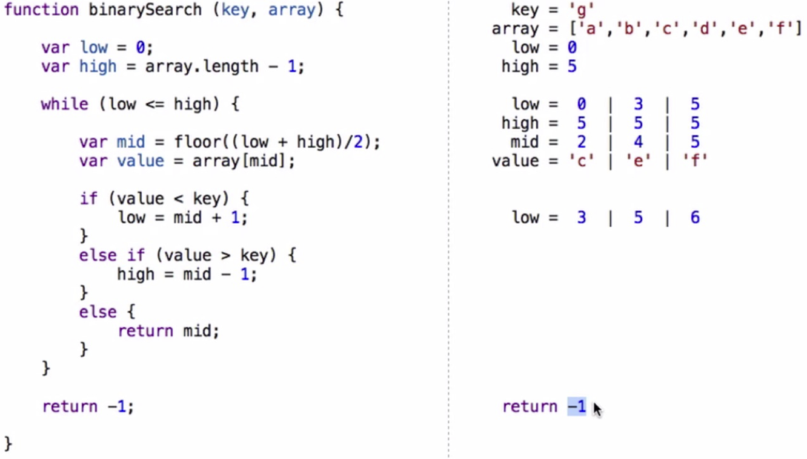

Live Literals
Tijs van der Storm (@tvdstorm)
Felienne Hermans (@felienne)

|
Live literals
- Live programming: improving feedback and immediacy
- Requires IDE as crucial part of programming language
- Our working hypothesis: source code for input and output
- For now: focus on literals as input output ports
Syntactic Real-Estate for Direct Manipulation and Immediate Feedback
doIt("1 + 2", 3)
doIt("1 * 2", 2)
What You Program is What You See
- Live examples and tests
- Spreadsheets
- "Probes"
Exploring examples and tests
function factors(n) {
test([
{n: 0, result: []},
{n: 4, should: [1,4,2], result: true}
]);
var fs = [];
for (var i = 1; i <= Math.floor(Math.sqrt(n)); i++)
if (n % i === 0) {
fs.push(i);
if (n / i !== i) fs.push(n / i);
}
return fs;
}
Spreadsheets
Sheet Literals
cell(function avg(sheet, lab, exam) {
return (lab + exam) / 2;
});
cell(function classAvg(sheet) {
return avg('avg', sheet);
});
var grades = sheet([
{classAvg: 8.375},
{student: 'James', lab: 9, exam: 9, avg: 9},
{student: 'Sean', lab: 8.5, exam: 7, avg: 7.75}
]);
Bret Victor, Inventing on Principle
function binarySearch(key, array) {
run({key: 'g', array: ['a', 'b', 'c', 'd', 'e', 'f']});
var low = 0, high = array.length - 1;
while (low <= high) {
p(low, [0,3,5]);
p(high, [5,5,5]);
var mid = Math.floor((low + high)/2);
var value = array[mid];
p(mid, [2,4,5]);
p(value, ["c","e","f"]);
if (value < key)
low = mid + 1;
else if (value > key)
high = mid - 1;
else
return mid;
}
return -1;
}
But, but, why!?
- Less is more
- Persistence and sharing
- Amenable to abstraction
Live Literals
- Source code as interactive medium of input and output
- Live literals: tests, spreadsheets, "probes"
- Towards live text
- Source code all the things